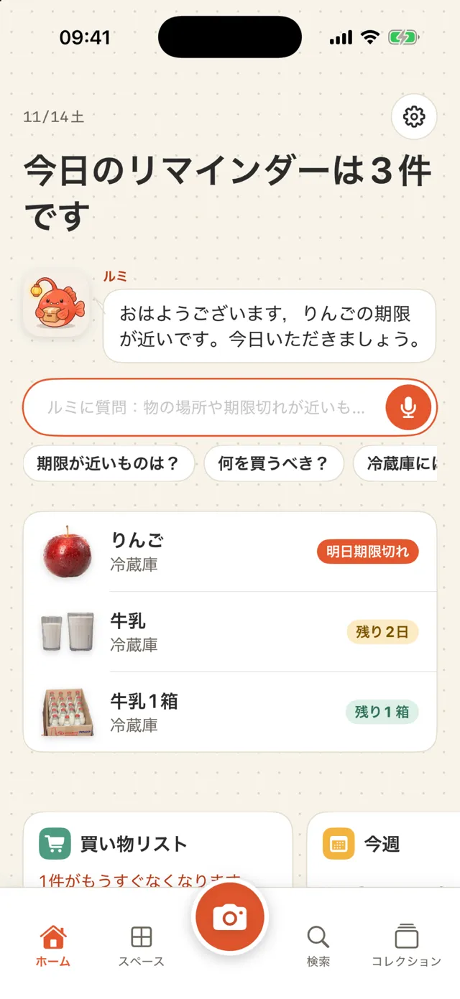
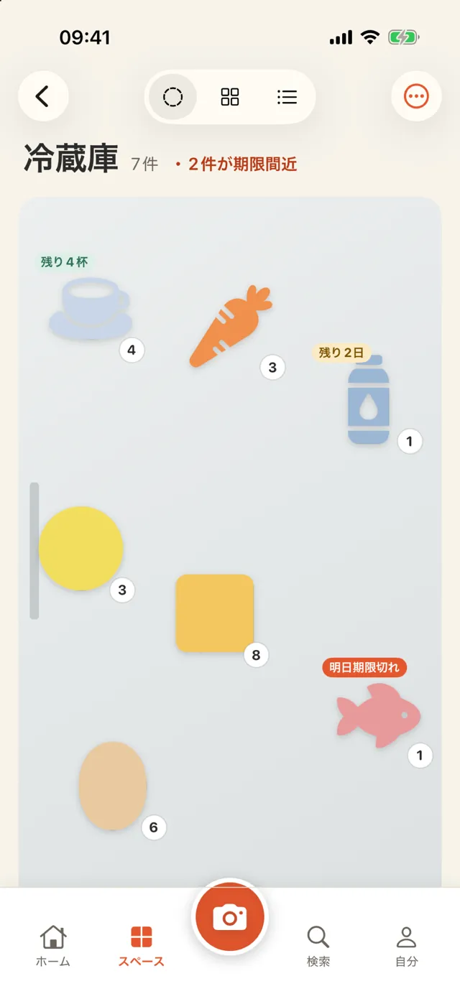
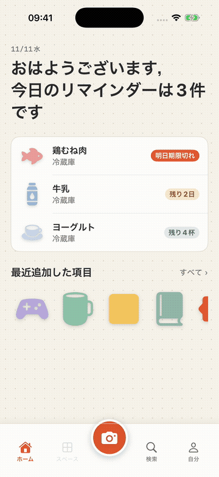
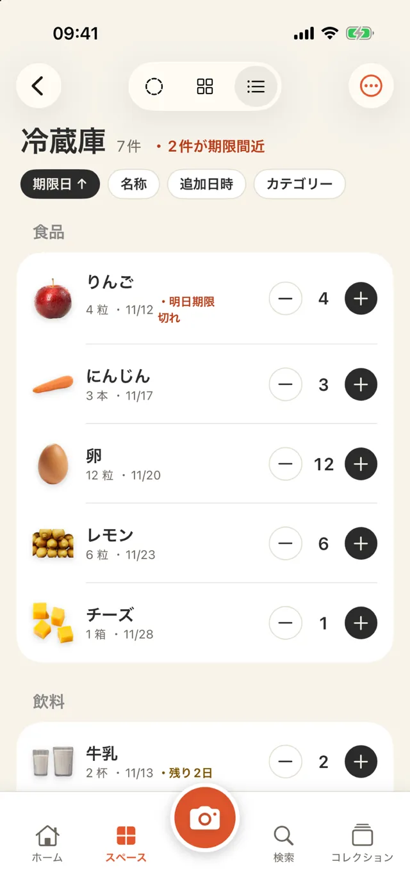
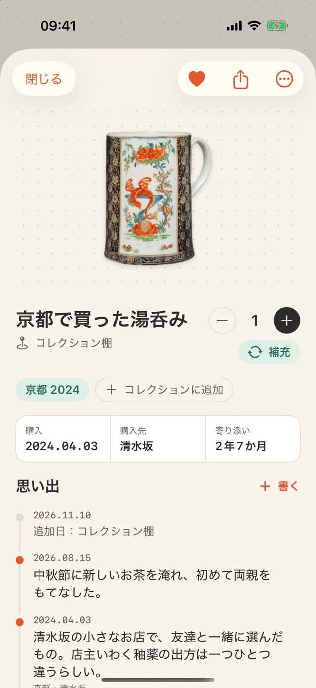
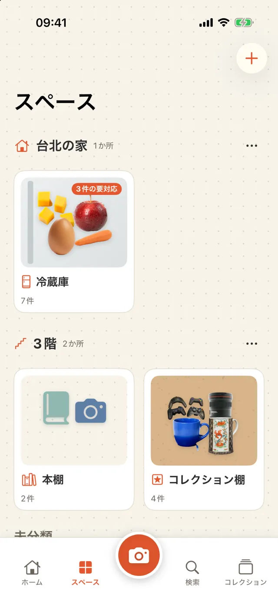
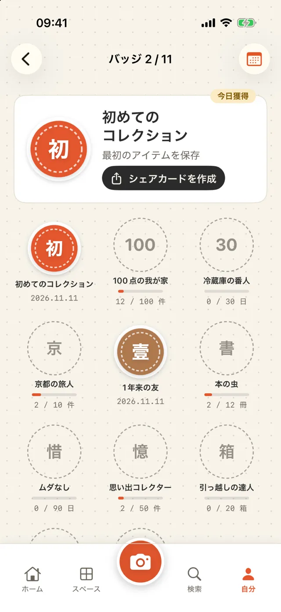

iPhoneで家のものと思い出を記録
撮影して保存する
検索して見つける
冷蔵庫の牛乳、収納のペーパータオル、書棚の本、旅行先で買ったカップ。写真を撮り、置き場所、残りの数、期限をiPhoneに記録できます。
近日App Storeで公開- ✓ 無料でダウンロード、場所は3か所まで無料
- ✓ アカウント不要
- ✓ データはiPhone内に保存

追加する
写真を撮って保存する
ものにカメラを向けて撮影すると、背景が自動で除去されます。同じカメラでバーコードも読み取れます。食品はOpen Food Facts、本はOpen Libraryで検索します。買い物の後は連続スキャンで、複数のものをまとめて保存できます。

表示を切り替える
ディスプレイ・グリッド・リストで見る
ディスプレイ表示では、冷蔵庫の扉、ドット方眼紙、コルクボードの上に写真を配置し、ドラッグやサイズ変更ができます。グリッドはものを探すとき、リストは在庫を確認するときに使えます。リストでは数を増減したり、スワイプして使い切ったことを記録したりできます。

期限を記録する
パッケージの日付を読み取る
撮影時にパッケージに印字された期限を読み取り、確認してから保存します。期限の数日前に通知でき、何日前に知らせるかは自分で設定できます。

思い出を残す
ものにまつわる話を記録する
旅行先で買ったカップや友人からの贈り物に、写真、日付、場所、短い文章を添えられます。「京都 2024」のようなコレクションにもまとめられます。「この日の思い出」はホームに表示されます。

場所を作る
冷蔵庫や800収納などから選ぶ
冷蔵庫、800収納（奥行き約80cmのウォークイン収納）、戸棚、書棚、クローゼット、コレクション棚、薬箱、引っ越し用の箱などのテンプレートがあります。アイコンと名前を自分で決めることもできます。必要なら家や階ごとに場所をグループ分けできます。

こんなときに使う
- 買い物の前に冷蔵庫の中身を確認する
- 期限が近いものから料理に使う
- 単3電池の置き場所を探す
- 本を誰に貸したか確認する
- 引っ越し用の箱ごとに中身を記録する
- 旅行の記念品を整理する
- 薬箱の期限切れを確認する
40秒の動画で見る
冷蔵庫の3種類の表示切り替え、数量の変更、思い出の開き方を紹介します。
AIを使う（任意）
AIを使わなくても、すべての機能を利用できます。使う場合は次の2種類から選べます。AIが呼び出されるのは、AIボタンを押したときだけです。
Appleの内蔵機能
iPhone上のApple Intelligenceを使います。無料でオフラインで動作し、データはiPhoneの外に送られません。対応するiPhoneとiOS 26以降が必要です。
自分のAPIキー
Gemini、Claude、DeepSeekなどを利用できます。キーはこのiPhoneのキーチェーンにのみ保存されます。データは選んだサービスに直接送られ、当方のサーバーは経由しません。
- 名前を付ける：写真に写ったものを認識し、分類と単位を提案します
- この場所を確認する：冷蔵庫で先に食べるもの、収納で補充するもの、薬箱で期限が切れたものを確認します（医療上の助言はしません）
- 文章で探す：同義語を加えて検索します
- 思い出の文章を整える：短いメモを、書かれていない事実を加えずに文章にします
バッジと共有用画像
冷蔵庫のものが30日間期限切れにならなければ、「冷蔵庫の番人」バッジを獲得できます。バッジ、ものにまつわる話、年間の振り返りは画像として保存できます。場所と価格は初期設定では含まれません。

アプリの情報
| 対応端末 | iPhone（iOS 18以降） |
|---|---|
| 言語 | 英語、繁体字中国語、簡体字中国語、日本語、韓国語、タイ語 |
| 料金 | ダウンロード無料（バナー広告あり、場所は3か所まで）。Proは広告と場所の数の制限がなくなります：週US$1、月US$3、買い切りUS$5 |
| アカウント | 不要 |
| データ | このiPhone内に保存。CSVで書き出し可能。削除したものは30日間復元可能 |
| ネットワーク | バーコード検索と、選択したAIサービスの利用時に使用 |
利用上の制限
- iCloud同期と家族との共有には、まだ対応していません
- バーコードのデータベースにない商品は、自分で名前を入力する必要があります。次に同じバーコードを読み取ると、その名前が使われます
- 背景除去の結果は写真によって異なります。失敗した場合は元の写真を使います